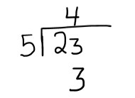

Solución:
Ejercicio 1. Hallar 23 mod 5
Objetivo: Practicar el cálculo del módulo mediante una división simple, determinando cuántas veces cabe el divisor en el dividendo y encontrar el residuo.
Dividir 23 entre 5:

El residuo es igual a 3.
23 mod 5 = 3
Fin del ejercicio.
Siguiente
Regresar